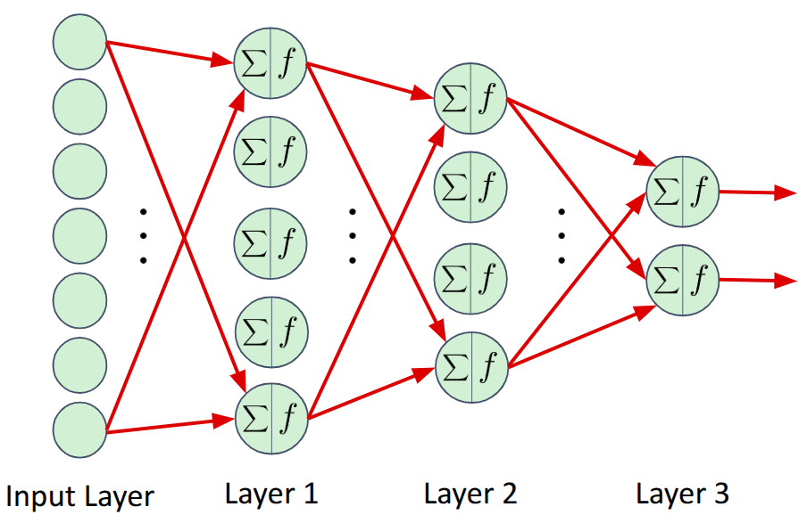

Fully Connected Neural Networks
A fully connected neural network is one in which:
- There is a sequence of neural layers.
- Each neuron in one layer provides input to each neuron in the next layer.
The network configuration file typically specifies:
- The network architecture
- The number of input units
- The number of hidden layers and the number of neurons within each
- The non-linear activation function for the hidden layers
- The number of output units and the corresponding non-linear activation function
Example Network
Here is an example network with one input, two hidden, and one output layer:

The corresponding network configuration file:
# Fully connected network
--network_type=fully_connected
# Seven inputs
--input_shape
7
# Two hidden layers
--number_hidden_units
5
4
--hidden_activation=elu
# Two output units
--output_shape
2
--output_activation=sigmoid
Configuration file notes:
- Blank lines are ignored.
- Any characters following ‘#’ are considered comments and are ignored.
- The
--input_shapeargument specifies an input vector of size 7 - The
--number_hidden_unitsargument specifies the number of layers and the number of neurons in each layer, in sequence. In this case, there are two hidden layers of size 5 and 4 neurons are specified. - The hidden layer activation function is elu for all hidden layers.
- The
--output_shapeargument specifies an output vector of size 2. - The output activation function is sigmoid (output range of [0,1]).
Constraints
- The input_shape must be the same shape as the input data.
- The output_shape (typically) must also be the same shape as the desired outputs.
Extensions
- Hidden layers: Any number of hidden layers (and corresponding sizes) can be specified using the
--number_hidden_unitsargument - Output layer: The output can be of any shape (e.g., a 2D matrix, or a N-D tensor), as long as this shape is the same as the data.
Fully-Connected Neural Network Examples
- Regression:
- Classification: